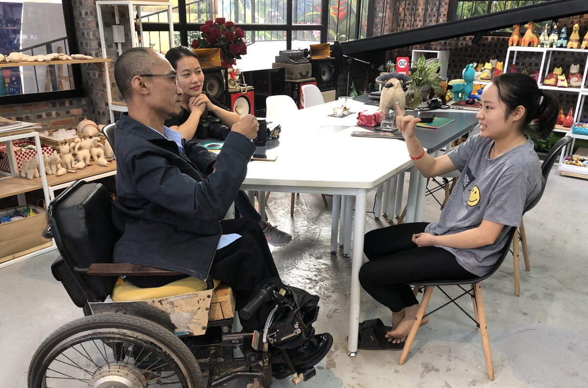
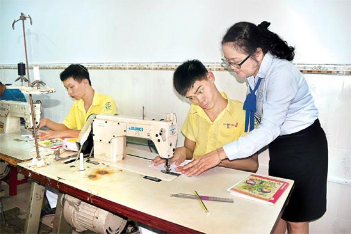

Tôi nộp 23 hồ sơ, đều bị từ chối vì là người khuyết tật
Bài viết kể về anh Trần Thành Trung, một người bị bại não bẩm sinh, đã nộp 23 bộ hồ sơ xin việc nhưng đều bị từ chối do nhà tuyển dụng cho...
KHÁM PHÁ VÀ ĐỊNH HƯỚNG
BÀI VIẾT NỔI BẬT

Bài viết kể về anh Trần Thành Trung, một người bị bại não bẩm sinh, đã nộp 23 bộ hồ sơ xin việc nhưng đều bị từ chối do nhà tuyển dụng cho...

Bài báo chia sẻ về anh Mai Văn Hải, một người khuyết tật vận động, đã học marketing bán hàng qua livestream và các kỹ năng như...
Bài viết dưới đây của SuperStars sẽ giới thiệu tới các bạn top việc làm cho người khuyết tật phổ biến nhất, không chỉ mang lại cho họ một nguồn thu nhập ổn định mà còn giúp tích lũy tài chính để ổn định cuộc sống sau này.
Cũng như rất nhiều người lao động khác, những người khuyết tật (NKT) luôn mong muốn có một mức thu nhập ổn định và có đủ điều kiện kinh tế để đảm bảo cuộc sống khi về già. Họ chiếm một tỷ lệ không nhỏ trong lực lượng lao động của nước ta. Họ góp mặt trong mọi ngành nghề, từ đơn giản tới phức tạp, từ những việc làm phổ thông cho tới những công việc yêu cầu kiến thức chuyên môn cao.

"Người khuyết tật" là một thuật ngữ khá rộng và bao gồm những người với rất nhiều điều kiện sức khỏe khác nhau. Không có một công việc nào là phù hợp với tất cả những người khuyết tật nhưng sẽ có một số công việc chỉ yêu cầu một vài kỹ năng cụ thể và nó phù hợp với những người có được các điều kiện cụ thể đó. Có những dạng khuyết tật như: Khuyết tật thị giác, khuyết tật thính giác, khuyết tật về ngôn ngữ, khuyết tật về trí tuệ, tùy thuộc vào mức độ khuyết tật, những người khuyết tật sẽ có những ưu điểm và hạn chế riêng khi lựa chọn cho mình công việc phù hợp. Ví dụ, những người không may bị khiếm thị thường có khả năng thính giác tốt hơn người bình thường; do đó, các công việc đòi hỏi sự nhạy bén về âm thanh sẽ đặc biệt phù hợp với họ. Cũng tương tự như vậy, những người có vấn đề về thính giác thì có thể làm việc thường xuyên và liên tục trong môi trường ồn ào mà không bị mất tập trung. Họ rất phù hợp làm việc trong ngành xây dựng và cơ khí. Những người có vấn đề về nhận thức thì có thể làm việc trong các phân xưởng sản xuất, phụ trách một công đoạn cụ thể, lặp đi lặp lại. Trong khi đó, những người bị khiếm khuyết vận động có thể làm những công việc mang tính chuyên môn cao như kế toán, tài chính, công nghệ, pháp lý,...
Tùy theo khả năng và trình độ của mình mà người khuyết tật có thể làm rất nhiều công việc khác nhau như:
Trong lĩnh vực Kinh doanh bán hàng online cũng có nhiều việc làm phù hợp với những người khuyết tật như: Nhân viên chăm sóc khách hàng, nhân viên tư vấn bán hàng, nhân viên bán hàng qua điện thoại, nhân viên tổng đài, nhân viên kinh doanh trực tuyến... Các công việc này dành cho những người khuyết tật về tay hoặc chân, nhưng không khuyết tật về thính giác, cần có giọng nói tốt, không bị ngọng, có kỹ năng tư vấn, chăm sóc khách hàng. Đặc biệt là có sự tư duy nhanh nhạy, nắm bắt được tâm lý khách hàng, đưa ra những cách xử lý tình huống phù hợp nhất. Mức thu nhập đối với những vị trí nhân viên tổng đài hay bán hàng online qua điện thoại trung bình khoảng 3-5 triệu đồng/tháng. Tùy thuộc vào mức hoa hồng mà các công ty hay doanh nghiệp chi trả cho nhân viên là người khuyết tật, rất có thể sẽ có mức thu nhập cao hơn nếu làm tốt, bán được nhiều hàng hay được khen ngợi từ phía khách hàng. 
Tìm được công việc phù hợp, người khuyết tật sẽ có thể tự mình ổn định cuộc sống
Những người có đam mê công nghệ thông tin và kỹ năng lập trình có thể kiếm thêm thu nhập bằng cách trở thành những nhà phát triển phần mềm, lập trình viên, nhân viên IT, nhân viên web... Những công việc này phù hợp với những người khuyết tật chân hay thính giác nhưng có kỹ năng và kiến thức về công nghệ thông tin tốt, chịu được áp lực công việc khi ngồi làm việc lâu. Mức thu nhập ước lượng của ngành này dành cho người khuyết tật dao động từ 5-8 triệu/tháng, tùy thuộc vào vị trí và công việc mà mỗi người đảm nhiệm sẽ có mức thu nhập phù hợp với trình độ và kỹ năng. Đối với những người có kỹ năng lập trình hay nhân viên IT giàu kinh nghiệm mức thu nhập lên tới 10-15 triệu đồng/tháng. Đặc biệt nếu những người khuyết tật có sự sáng tạo và đam mê công việc, làm được nhiều dự án thì chắc chắn mức thu nhập sẽ tốt hơn.
Dối với công việc này yêu cầu những người khuyết tật cần có trình độ tin học cơ bản, tin học văn phòng tốt, biết sử dụng máy tính thành thạo, không bị khuyết tật về mắt để có thể làm những công việc như xuất nhập dữ liệu chính xác hay sắp xếp công việc hiệu quả nhất. Hiện nay có rất nhiều những việc làm liên quan nhập liệu, hay tuyển cộng tác viên làm việc tại nhà phù hợp với người khuyết tật như: Nhân viên nhập liệu, nhân viên content, nhân viên copywriter... Có rất nhiều công ty ưu tiên người khuyết tật, linh động thời gian làm việc hay có thể nhận việc về nhà làm và gửi bài, cũng như số lượng công việc theo đúng thời gian đã hẹn. Mức thu nhập cơ bản của những công việc này đối với những người khuyết tật sẽ khoảng 2- 5 triệu đồng, tùy thuộc vào khả năng làm việc của mỗi người.
Cả những người bị khuyết tật vận động và khuyết tật tinh thần đều có thể trở thành công nhân tại các nhà máy, phân xưởng sản xuất. Số lượng công ty nhận người khuyết tật cũng nhiều vô số kể, từ các công ty may, làm đồ thủ công mỹ nghệ, làm hương, làm tăm,... Đối với nghề làm may, công việc này thì không cần thông minh hay sáng tạo, nhưng để trở thành một công nhân may hay thợ lành nghề thêu, dệt bạn cũng cần phải có kinh nghiệm và kỹ năng liên quan đến may. Nếu chưa có kiến thức về công việc này bạn có thể tham gia các trung tâm đào tạo việc làm dành cho người khuyết tật để theo đuổi công việc mà mình thích để có kinh nghiệm cơ bản cho công việc. Đối với nghề làm tăm, làm hương đây cũng là một trong số những nghề quen thuộc đối với những người khiếm thính, khiếm thị, hay không thể đi lại bình thường nhưng có đôi tay khéo léo, làm được mọi việc. Công việc đối với nghề thủ công này cũng khá đơn giản và không đòi hỏi trình độ cao, nếu chăm chỉ rèn luyện và làm nghề họ cũng có thêm thu nhập ổn định để nuôi sống bản thân. Mức lương cơ bản đối với ngành này dành cho người khuyết tật dao động từ 3-5 triệu/ tháng. 
Có đa dạng việc làm phù hợp với người khuyết tật
Hiện nay có rất nhiều những trung tâm dạy nghề dành cho người khuyết tật, thường nhiều trung tâm sẽ dạy nghề và tạo công ăn việc làm luôn, chính vì thế không mất quá nhiều thời gian học tập và sẽ có việc làm ngay sau khi hoàn thành khóa học. Một số trung tâm các bạn có thể tham khảo như:
Đã có rất nhiều người khuyết tật vượt qua chính mình và tạo nên những thương hiệu riêng về sản phẩm handmade của chính mình. Việc làm này dành cho những đôi tay lành nặn, khéo léo, thích sự sáng tạo để có được những món đồ handmade đẹp, ý nghĩa, thu hút người dùng để bán ra thị trường kiếm thêm thu nhập. Các sản phẩm có thể làm handmake, như mây tre đan, tranh thêu, tranh đính đá, xâu hạt vòng, làm túi xách, làm các sản phẩm đồ lưu niệm... Để làm được công việc này đòi hỏi sự cẩn thaanjm tỉ mỉ, chăm chỉ và luôn kiên trì, nắm bắt được xu thế để đưa ra nhữn ý tưởng mới cho sản phẩm nổi bật hơn. Có nhiều sản phẩm của người khuyết tật không chỉ bán tại thị trường trong nước mà còn được bán tại nước ngoài. Mức thu nhập đối với những người khuyết tật làm đồ handmade phụ thuộc vào sản phẩm bán ra, mức lương giao động khoảng 2-5 triệu đồng/ tháng. Tùy thuộc vào cơ sở làm việc hay những người khuyết tật tự mình sáng tạo và thực hiện công việc thì mức thu nhập có thể cao hơn.
Thiết kế đồ họa cũng là công việc mà một người khuyết tật có thể làm nếu có đam mê hay năng khiếu về thiết kế đồ họa. Đây là công việc đòi hỏi tính nghệ thuật cao, những người làm được công việc này cũng cần có kiến thức về màu sắc và những điều cơ bản về bố cục hình ảnh để đạt kết quả tốt cho công việc. Công việc thiết kế đồ họa cũng không cần di chuyển nhiều, làm việc trong môi trường tại văn phòng, phù hợp với những người bị khuyết tật đôi chân hay thính giác, khuyết tật ngôn ngữ nhưng không được khuyết tật trí tuệ. Tuy nhiên cũng giống như những ngành nghề khác, khi bạn muốn theo đuổi cũng cần có kiến thức và đào tạo. Người khuyết tật có thể theo học tại các trường Cao đẳng, đại học hay những trung tâm dạy nghề cho người khuyết tật có chuyên ngành thiết kế đồ họa. Mức lương của người khuyết tật làm thiết kế đồ họa chưa có kinh nghiệm khoảng 3- 5 triệu đồng/tháng. Thu nhập sau đó cũng phụ thuộc vào trình độ của mỗi người và những sản phẩm tạo ra cho công ty. Ngoài những việc làm trên người khuyết tật cũng có thể thực hiện tốt được những công việc khác, tùy thuộc vào mức độ khuyết tật của bản thân, và những kỹ năng, đam mê riêng sẽ làm tốt công việc mà mình lựa chọn.
ể người khuyết tật có thể lựa chọn được một công việc phù hợp, cần phải dựa trên những yếu tố như:
Thực tế những người không bị khuyết tật muốn tìm được công việc phù hợp và mình yêu thích cũng không phải là điều dễ dàng, vì thế tìm việc làm cho người khuyết tật cũng tương đối khó. Bởi tùy thuộc mức độ khuyết tật công việc sẽ bị giới hạn bởi nhiều yếu tố chính vì thế để tìm việc cho người khuyết tật chúng ta có thể thực hiện qua những cách cơ bản sau:
Những người khuyết tật có thể truy cập vào website và tạo một CV xin việc và tìm hiểu những công việc phù hợp với bản thân để gửi CV. Hoặc những bản Cv online sẽ được lưu lại, nhà tuyển dụng sẽ liên hệ với bạn nếu bạn phù hợp với vị trí công việc họ đang tuyển dụng.
Có rất nhiều những trung tâm hỗ trợ đạo tạo việc làm cho người khuyết tật, tại các tỉnh thành cũng có những trung tâm, chính vì thế các bạn có thể tìm kiếm và lựa chọn trung tâm uy tín, chất lượng để theo học nghề mà mình yêu thích cũng như phù hợp với mức độ khuyết tật của bản thân. Tại những trung tâm đào tạo dành cho người khuyết tật hầu hết thường có liên kết với các doanh nghiệp hay công ty để đảm bảo việc làm đầu ra cho người khuyết tật, nhằm hỗ trợ tốt ưu nhất từ khâu đào tạo đên việc làm. Chính vì thế các bạn hoàn toàn có thể yên tâm theo đuổi đam mê của mình và có một công việc tốt nhất. Trên đây là một số những gợi ý của JOBOKO về những vị trí công việc phù hợp với người khuyết tật cùng những thông tin giúp người khuyết tật có thể lựa chọn cho mình công việc dễ dàng hơn. Hy vọng nhờ những chính sách ưu tiên người khuyết tật của các cơ quan đoàn thể hỗ trợ và tiềm năng của chính bản thân những người khuyết tật sẽ được chứng minh trong thực tế cuộc sống. Người khuyết tật ngày nay đang đóng một vai trò quan trọng hơn trong thị trường lao động, điều này không chỉ giúp họ trở nên độc lập về tài chính, giảm bớt gánh nặng cho gia đình và xã hội mà còn tạo cho họ niềm vui, niềm tin cho cuộc sống cho nhiều người khuyết tật khác.
Nghị Lực Sống đã xây dựng một mô hình đào tạo nghề độc đáo, kết hợp lý thuyết và thực hành, linh hoạt theo khả năng của từng học viên. Tập trung vào các ngành nghề công nghệ thông tin – lĩnh vực ít yêu cầu di chuyển, phù hợp với người khuyết tật – dự án giúp họ có thể làm việc từ xa, tăng khả năng hòa nhập xã hội.
Nghị Lực Sống cũng là mô hình tiên phong trong việc kết nối doanh nhân, nhà đầu tư với các sáng kiến vì cộng đồng. Các doanh nghiệp, nhà hảo tâm khi hợp tác đều cam kết sử dụng lợi nhuận để tái đầu tư xã hội. Đây là hình mẫu doanh nghiệp xã hội gắn liền với phát triển bền vững và trách nhiệm cộng đồng.
Procter & Gamble (P&G) Việt Nam - Hà Nội
10 - 15 triệuCông ty TNHH Xây Dựng Vận Tải Thương Mại Dịch Vụ Phước Lộc Thành - TP.HCM
Thoả thuận
Công ty TNHH Giải pháp Truyền thông T&T Việt Nam - Tp Hà Nội
Thỏa thuậnCông ty TNHH Xây Dựng Vận Tải Thương Mại Dịch Vụ Phước Lộc Thành - TP.HCM
Thỏa thuận